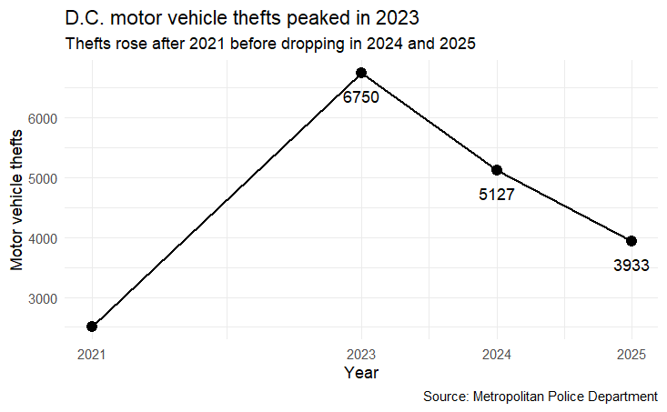
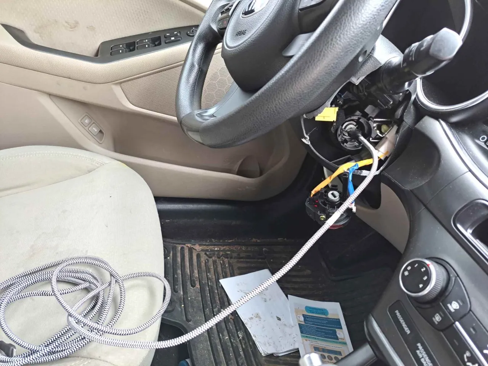

WASHINGTON — The spike in auto theft that followed the COVID-19 pandemic may be slowing, but it hasn’t gone away.
Carjackings and vehicle theft surged across D.C and the surrounding region in the years after the COVID-19 pandemic, turning a once relatively rare crime into a noticeable part of daily life in the nation's capital.
As new data suggests the worst of the surge may have passed though, the numbers remain far from pre-pandemic baselines
According to Metropolitan Police Department of DC crime data, motor vehicle thefts in the city rose sharply between 2021 and 2023, jumping from around 2,500 incidents to over 6,750.
Its increase was widely marked one of the most dramatic crime spikes in the region in recent years.
What this story shows
Vehicle thefts surged after COVID, peaked in 2023, and are now declining — but still high.
Key numbers
6,750+
Peak theft level in 2023
31%
Kia/Hyundai theft share in 2023
3,933
Thefts in 2025
The spike came at a time where people on social media found defects in Hyundai and Kia vehicles, coining the "Kia Challenge" hack that uses a USB cable. The "challenge” accounted for 31% of citywide car thefts in early 2023 according to a press release earlier in that year.
Since then, D.C residents have had to be less fearful as numbers have declined. Motor vehicle thefts fell to 5,127 in 2024 and 3,933 in 2025.
Unfortunately even with that drop, thefts remain a significant problem higher than where they stood just in 2019, suggesting the region has not returned to its pre-pandemic baseline.

Source: Metropolitan Police Department crime data.
The surge and decline
The chart shows the sharp rise in thefts through 2023 and the decline that followed.
The problem wasn’t limited to the city limits.
Across the D.C., Maryland and Virginia region, similar patterns have emerged. Police in Montgomery County and Prince George’s County in Maryland saw increases in vehicle-related crime beginning in 2021, while Northern Virginia jurisdictions such as Fairfax and Arlington saw smaller but noticeable rises.
Ironically many of these thieves can’t actually drive themselves legally. Law enforcement officials have pointed out a rise in juvenile involvement in both car theft and carjacking cases.
All across the DMV, a majority of those arrested in carjacking cases have been minors, according to the Washington Post reflecting a broader shift in who is committing the crimes.

Method showing the ease of acess to Kia cars with only a flash drive. Credit: https://www.indystar.com/
How the trend developed
2021
Trend begins in Milwaukee
2023
Peak theft year
2024
Decline begins
2025
Continued drop
Police in the region have connected the rise in Kia and Hyundai thefts to viral TikTok videos in which teens demonstrate how to use USB cords and phone chargers, to hot-wire vehicles, a trend often associated with the “Kia Boyz.” on TikTok.
Thieves are primarily targeting older models because of a weakness in their anti-theft systems.
The trend started in Milwaukee Wisconsin in early 2021 and took off, hitting the DMV shortly after
“It's kind of hard to surprise me anymore after doing this so long, but frankly, this is a bit of a shock,” Laurel, Maryland Police Chief Russ Hamill said to NBC washington
“It's kind of hard to surprise me anymore after doing this so long, but frankly, this is a bit of a shock.”
— Laurel Police Chief Russ Hamill
Even as theft numbers decline, the surge has reshaped how residents think about safety and everyday life.
A once rare is now a persistent concern, all of the DC area.
This is especially true with the role social media played in accelerating crimes like the “Kia Boyz” trend.
The continued involvement of younger offenders adds another layer of complexity for law enforcement and communities. While progress has been made, the region still faces a long path back to pre-pandemic norms.